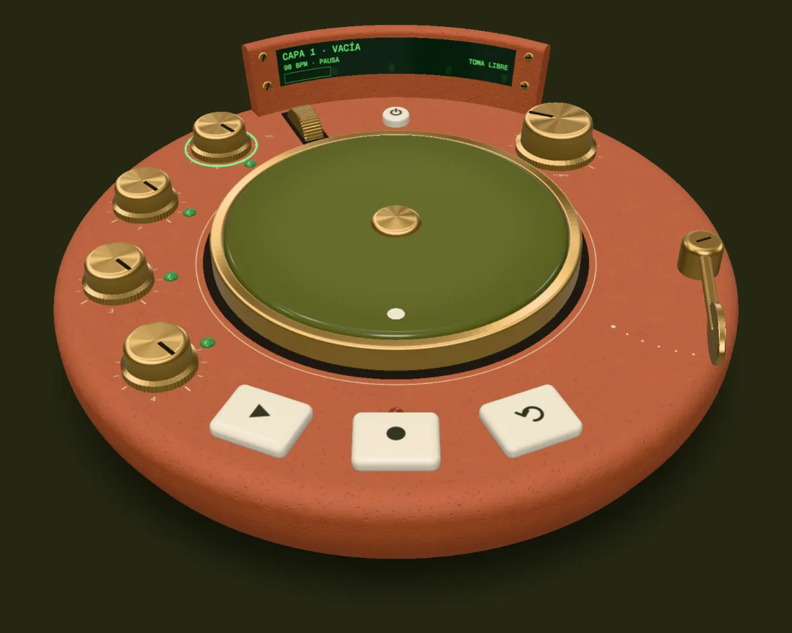
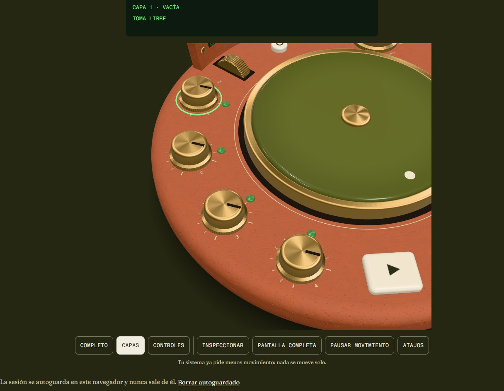
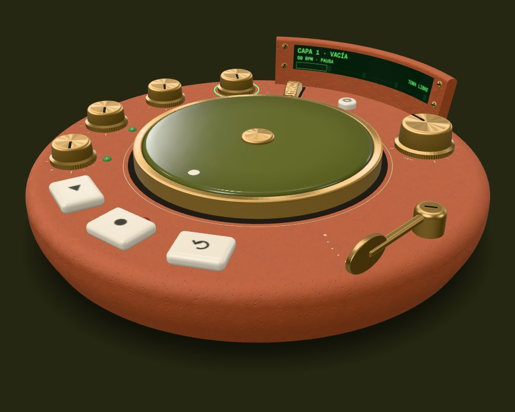

Torno
Un instrumento de bucles de cuatro capas, de barro y latón, que se toca en el navegador.
Nada suena hasta que tocas. Con el teclado: Espacio reproduce y ? enseña los atajos.

Cuatro capas, un solo reloj
Cada capa repite un sonido: una batería, un bajo, unos acordes, una textura o lo que grabes con el micrófono. Las mezclas con sus diales y arrastras el tiempo con el disco.
- Doce bucles propios
- Sintetizados con código, en re menor y a 90 BPM. Sin muestras de nadie.
- Graba encima
- Tomas libres o de 1, 2 o 4 compases, con cuenta previa y sobregrabación.
- Nada sale de aquí
- Tu audio no sale del navegador. Sin cookies y sin analítica.

Conoce tu instrumento
Nueve cosas y ya lo tocas. «Ver en el instrumento» te lleva a cada control: la cámara viaja hasta él y lo señala, sin que suene nada.
-
Reproducir y pausar
Ver en el instrumentoPulsa para que suenen las capas y otra vez para pausar. Mantén pulsado para parar y volver al principio. La primera vez, la capa 1 arranca con una batería.
Espacio · mantener: Mayús + Intro
-
Grabar
Ver en el instrumentoPulsa para grabar con el micrófono en la capa elegida y otra vez para cerrar la toma. Si la capa ya suena, lo que grabes se suma. Deshacer quita la toma; mantenlo para rehacer.
R graba · Z deshace
-
Mezclar las capas
Ver en el instrumentoCada capa tiene su dial: gíralo para el nivel, púlsalo para elegirla y mantenlo para silenciarla.
1–4 eligen · flechas en el dial
-
Tempo
Ver en el instrumentoGira el dial principal: de 40 a 240 BPM. Velocidad y tono cambian juntos, como en un tocadiscos.
Flechas · Mayús + flecha, de 10 en 10

Barro, latón y fósforo
-
Barro cocidoEl cuerpo, mate y con su grano.
-
Latón envejecidoDiales, brazo y anillo del disco.
-
Esmalte olivaEl disco, vidriado como un plato.
-
Cerámica cremaLas teclas, que se hunden al tocar.
-
Fósforo verdeLa pantalla y los pilotos.
Anatomía de un bucle
Las cuatro capas giran sobre el mismo reloj, como anillos de un mismo disco: una vuelta, dos compases. Escúchalas una a una o juntas.
-
Batería · AlfarBombo, caja y platos de barro
Escuchar -
Bajo · RaízRe menor, redondo y bajo
Escuchar -
Acordes · OlivoCuatro acordes que respiran
Escuchar -
Textura · CierzoEl viento del valle
Escuchar
Ficha técnica
Cifras medidas, con cómo se midió cada una. Nada de objetivos.
| Qué | Medido | Cómo |
|---|---|---|
| Del gesto al audio | 0,4–4,3 ms | En Chromium, del evento del control al cambio en el hilo de audio. |
| CPU del audio | 230–243× | El núcleo con 4 capas, filtros y limitador, frente al tiempo real. |
| Peso de la primera visita | 596 kB | Sin el 3D; con él, 1,33 MB. Todo lo descargado, en bruto. |
Preguntas frecuentes
¿Se sube mi audio a algún sitio?
No. Todo pasa en tu navegador: ni el micrófono ni lo que grabas salen de él.